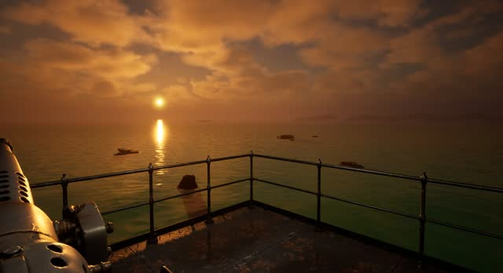
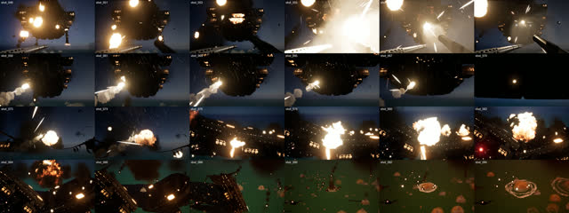
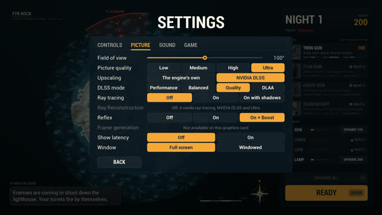
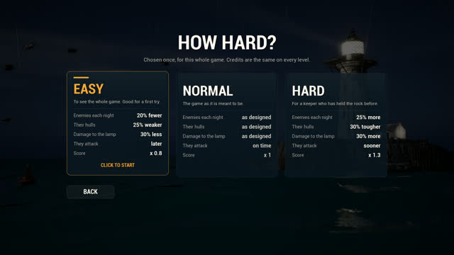

FYR GLEMT
FYR
A lighthouse defence for Epic's 2026 AI MegaJam (theme: Director's Cut), made in four days by one developer directing AI agents
A storm at sea, a lighthouse on a black rock, and saucers that want its lamp out. Plan the night on a chart in the keeper's hut, walk out into the storm, and fight from the tower while your turrets fire on their own.
Stop the night at any moment to change the plan. Lose it, and you play it again.

By the numbers counted Fri 13 Nov, 19:59
- 29,223 lines of C++ game code
- 126 Rodin jobs (3D models and rigs)
- 94 kinds of 3D model in the game
- 572 pictures from the image model
- 264 sound effects, all synthesised
- 48 spoken lines
- 8 pieces of music
- 3 Poly Haven assets (CC0)
- 16 lanes of agents in the rebuild
- 301 commits to the game's repository
How each number was counted
- 29,223 lines of C++ game code
- Non-empty lines in the 76 source files of the game (game/Source), all written by the coding agents during the jam.
- 126 Rodin jobs (3D models and rigs)
- Distinct generation and rigging ids in the job records of the asset folders, the prompt files and the agents' notes, from 12 November 06:00 on. Not every job became a model in the game; several were tries that failed and were sent again.
- 94 kinds of 3D model in the game
- Model folders in the game's content (Content/Fyr/Models): Rodin models, local 3D models and Poly Haven models together.
- 572 pictures from the image model
- Picture files the image model wrote for FYR's own picture jobs (one file a seed) from 12 November 06:00 on. Cut-outs are left out. Most were references for 3D models; none is in the game as it is.
- 264 sound effects, all synthesised
- Sound effect files imported into the game (Content/Fyr/Audio/SFX), each made by our own synthesis code; one kind of sound often has several variants.
- 48 spoken lines
- Voice lines in the game (Content/Fyr/Audio/Voice), each counted once however many takes of it are in; 90 voice files in all.
- 8 pieces of music
- Music files in the game (Content/Fyr/Audio/Music), made with the local music model.
- 3 Poly Haven assets (CC0)
- Poly Haven models and surfaces in the project's CC0 lock, fetched during the jam, that the entry's declaration lists.
- 16 lanes of agents in the rebuild
- Lanes of the rebuild that have a written brief (BRIEF.md, and BRIEF-2.md for a lane's second round), each worked by one Claude Code agent at a time, most in their own git worktree; the integrator, the verifier and this log are lanes too. A lane whose agent was restarted counts once.
- 301 commits to the game's repository
- Commits in the game's own (private) repository; its history shows when each thing was made.
Newest pictures from the running game

The same view with the wreck, skerries, a boat by a low island and a far coast on the horizon.
From the running game Fri 13 Nov, 20:03

The view from the gallery gun at dusk: open sea to the horizon.
From the running game Fri 13 Nov, 20:03

The mothership's end at 19:52, frames from one run: the fight, the rocket leaving and its flight to the hull (in the darkest frame only its motor glows against the hull), the hit, the ship breaking up, the wreck falling into the sea.
From the running game Fri 13 Nov, 20:03

A harvester's kill at night, 90 m from the gun, at 0.05, 0.15, 0.3, 0.55, 0.9, 1.5 and 2.6 seconds: smoke and fire simulated in Blender and rendered to sprite sheets, on top of the game's own particles and debris. 19:49.
From the running game Fri 13 Nov, 20:03

The picture tab at 18:59. The frame generation row reads "not available" in this run; that row is still open.
From the running game Fri 13 Nov, 20:03

The three cards at 19:04. Easy: 20% fewer enemies, hulls 25% weaker, 30% less damage to the lamp, attacks come later.
From the running game Fri 13 Nov, 20:03


The gallery: all 46 pictures in order, with before and after
Latest from the log
-
 3 failures
Friday evening: the first playable, the developer's notes as they came, and two things we got wrong
From 17:45 to 20:00. The lanes came back on another model, and the first playable was ready at 17:56 once the package's real fault was found. The developer played and kept sending notes; what each became: a chart that…
3 failures
Friday evening: the first playable, the developer's notes as they came, and two things we got wrong
From 17:45 to 20:00. The lanes came back on another model, and the first playable was ready at 17:56 once the package's real fault was found. The developer played and kept sending notes; what each became: a chart that…
-
 2 failures
Catching up, part three: the developer's first look and what each lane did, the first package, the newest tools, and a stop at 17:30
At 15:20 the developer gave his first verdicts on the rebuild: saucers in clumps, a dead map, a HUD below a shooter's standard, black screens between nights, fingers through the gun's handles. What each lane did about…
2 failures
Catching up, part three: the developer's first look and what each lane did, the first package, the newest tools, and a stop at 17:30
At 15:20 the developer gave his first verdicts on the rebuild: saucers in clumps, a dead map, a HUD below a shooter's standard, black screens between nights, fingers through the gun's handles. What each lane did about…
-
 1 failure
Catching up, part two: rain on the graphics card, latency measured for real, photoreal rock, and explosions from Blender
The storm got its own rain, wet rock, rain on the lantern glass and lightning that lights the cloud; Reflex latency was measured in a real window (7.5 to 8.8 ms on, 13 to 16 off) and ray tracing stays off by default…
1 failure
Catching up, part two: rain on the graphics card, latency measured for real, photoreal rock, and explosions from Blender
The storm got its own rain, wet rock, rain on the lantern glass and lightning that lights the cloud; Reflex latency was measured in a real window (7.5 to 8.8 ms on, 13 to 16 off) and ray tracing stays off by default…
Look inside
- How it is made10 toolsWho does what, every tool with its licence, and what was prepared before the jam.
- The log7 entriesDay by day and hour by hour: what was built, with which tool and prompt.
- Gallery46 picturesEvery picture in order, generated ones with their prompts, with before and after.
- What went wrong12 failuresNewest: The rebuild cut the developer's 64 achievements to 30, and nobody asked him